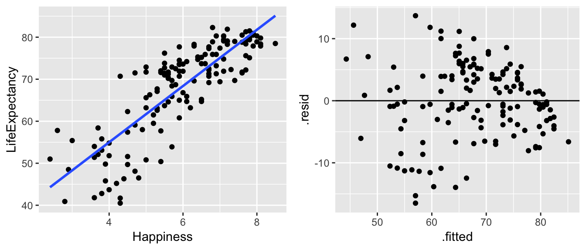

Chapter 3 Simple Linear Regression
more soon
3.1 R Example (SLR): Happy Planet
The data below represents 10 different variables on health of a country measured on 143 countries. Data taken from (R. Lock et al. 2016), originally from the Happy Planet Index Project [http://www.happyplanetindex.org/]. Region of the world is coded as 1 = Latin America, 2 = Western nations, 3 = Middle East, 4 = Sub-Saharan Africa, 5 = South Asia, 6 = East Asia, 7 = former Communist countries. We are going to investigate happiness and life expectancy.
3.1.1 Reading the data into R
happy <- read_delim("~/Dropbox/teaching/math150/spring17/happyPlanet.txt", delim="\t")
glimpse(happy) ## Observations: 143
## Variables: 11
## $ Country <chr> "Albania", "Algeria", "Angola", "Argentina", "Arm…
## $ Region <dbl> 7, 3, 4, 1, 7, 2, 2, 7, 5, 7, 2, 1, 4, 5, 1, 7, 4…
## $ Happiness <dbl> 5.5, 5.6, 4.3, 7.1, 5.0, 7.9, 7.8, 5.3, 5.3, 5.8,…
## $ LifeExpectancy <dbl> 76.2, 71.7, 41.7, 74.8, 71.7, 80.9, 79.4, 67.1, 6…
## $ Footprint <dbl> 2.2, 1.7, 0.9, 2.5, 1.4, 7.8, 5.0, 2.2, 0.6, 3.9,…
## $ HLY <dbl> 41.7, 40.1, 17.8, 53.4, 36.1, 63.7, 61.9, 35.4, 3…
## $ HPI <dbl> 47.91, 51.23, 26.78, 58.95, 48.28, 36.64, 47.69, …
## $ HPIRank <dbl> 54, 40, 130, 15, 48, 102, 57, 85, 31, 104, 64, 27…
## $ GDPperCapita <dbl> 5316, 7062, 2335, 14280, 4945, 31794, 33700, 5016…
## $ HDI <dbl> 0.801, 0.733, 0.446, 0.869, 0.775, 0.962, 0.948, …
## $ Population <dbl> 3.15, 32.85, 16.10, 38.75, 3.02, 20.40, 8.23, 8.3…3.1.2 Running the linear model (lm)
happy.lm = lm(LifeExpectancy ~ Happiness, data=happy)
happy.lm %>% tidy()## # A tibble: 2 x 5
## term estimate std.error statistic p.value
## <chr> <dbl> <dbl> <dbl> <dbl>
## 1 (Intercept) 28.2 2.28 12.4 2.76e-24
## 2 Happiness 6.69 0.375 17.8 5.78e-383.1.3 Ouptut
Some analyses will need the residuals, fitted values, or coefficients individually.
happy.lm %>% augment()## # A tibble: 143 x 9
## LifeExpectancy Happiness .fitted .se.fit .resid .hat .sigma .cooksd
## <dbl> <dbl> <dbl> <dbl> <dbl> <dbl> <dbl> <dbl>
## 1 76.2 5.5 65.0 0.537 11.2 0.00765 6.09 1.28e-2
## 2 71.7 5.6 65.7 0.527 6.00 0.00737 6.14 3.57e-3
## 3 41.7 4.3 57.0 0.796 -15.3 0.0168 6.02 5.39e-2
## 4 74.8 7.1 75.7 0.678 -0.944 0.0122 6.16 1.48e-4
## 5 71.7 5 61.7 0.619 10.0 0.0101 6.10 1.38e-2
## 6 80.9 7.9 81.1 0.904 -0.198 0.0216 6.16 1.18e-5
## 7 79.4 7.8 80.4 0.873 -1.03 0.0202 6.16 2.95e-4
## 8 67.1 5.3 63.7 0.564 3.40 0.00842 6.16 1.32e-3
## 9 63.1 5.3 63.7 0.564 -0.596 0.00842 6.16 4.04e-5
## 10 68.7 5.8 67.0 0.515 1.66 0.00705 6.16 2.60e-4
## # … with 133 more rows, and 1 more variable: .std.resid <dbl>We can plot the main relationship, or we can plot the residuals (to check that technical conditions hold):
ggplot(happy, aes(x=Happiness, y=LifeExpectancy)) + geom_point() +
geom_smooth(method="lm", se=FALSE)
happy.lm %>% augment %>% ggplot(aes(x = .fitted, y = .resid)) + geom_point() +
geom_hline(yintercept=0)
Intervals of interest: mean response, individual response, and parameter(s).
predict.lm(happy.lm, newdata=list(Happiness=c(4,7)),interval=c("conf"), level=.95)## fit lwr upr
## 1 54.99531 53.24675 56.74387
## 2 75.07444 73.78057 76.36830predict.lm(happy.lm, newdata=list(Happiness=c(4,7)),interval=c("pred"), level=.95)## fit lwr upr
## 1 54.99531 42.72945 67.26117
## 2 75.07444 62.86510 87.28377happy.lm %>% tidy(conf.int = TRUE)## # A tibble: 2 x 7
## term estimate std.error statistic p.value conf.low conf.high
## <chr> <dbl> <dbl> <dbl> <dbl> <dbl> <dbl>
## 1 (Intercept) 28.2 2.28 12.4 2.76e-24 23.7 32.7
## 2 Happiness 6.69 0.375 17.8 5.78e-38 5.95 7.43References
Lock, R., P.F. Lock, K. Lock Morgan, E. Lock, and D. Lock. 2016. Unlocking the Power of Data. Wiley. http://www.lock5stat.com/StatKey/.